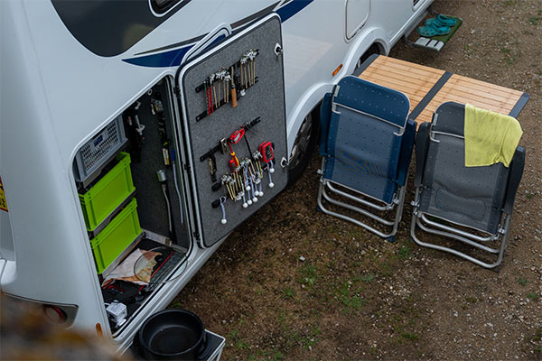
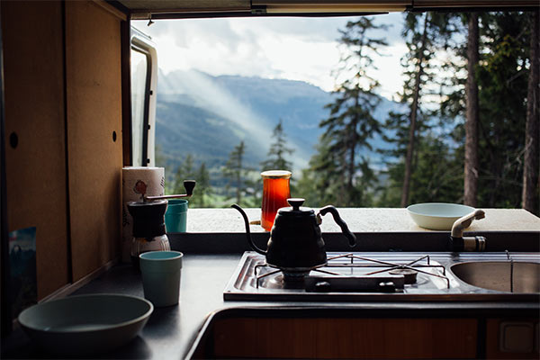

-
Daily Lifestyles
- 
-
So where...?
The Hunt & Gather
The vandwelling lifestyle is built around autonomy, resourcefulness, and minimalism, offering flexibility in travel and day-to-day living. Vandwellers often park in scenic natural areas, public lands, or urban locations, depending on their preferences and needs. Many vehicles are customized to suit individual lifestyles, ranging from basic setups with a sleeping bag and minimal storage to elaborate conversions with kitchenettes, solar power systems, and convertible showers. Day-to-day practices include sourcing water from public stations, using gym memberships or portable showers for hygiene, and cooking meals using compact stoves or outdoor setups.
-
Real Talk
Funding
For work and communication, vandwellers rely heavily on digital tools and public resources. Many work remotely as freelancers, digital nomads, or employees with flexible arrangements, often accessing Wi-Fi in libraries, cafes, or co-working spaces. Others take on seasonal jobs, such as park rangers or event staff, to fund their travels. Some even maintain permanent employment, choosing a van to save on rent while leveraging workplace amenities like showers and laundry services.
- 
-
Expect Challenges
Stay Flexible
Everyday logistics also require ingenuity. Without a permanent address, vandwellers use mail forwarding services to receive packages and important correspondence. Bills and administrative tasks are managed online, while laundry is handled at laundromats or workplace facilities. Despite the challenges, vandwellers embrace this lifestyle for its freedom, self-reliance, and the ability to experience the world on their own terms.